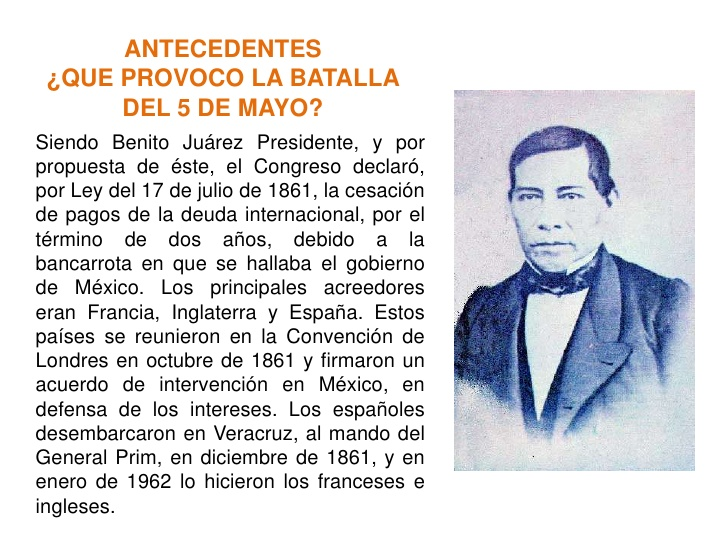

En octubre de 1861, Francia, Inglaterra y España suscribieron la Convención de Londres, en la cual se comprometieron a enviar contingentes militares a México para reclamar sus derechos como acreedores por una deuda que ascendía a alrededor de 80 millones de pesos, aproximadamente eran 69 millones para los ingleses, 9 millones para los españoles y 2 millones para Francia.
El contingente europeo, estaba compuesto de la siguiente manera:
España: 6000 hombres al mando del General Juan Prim
Francia: 3000 hombres dirigidos por el Contraalmirante Jurien de la Gravière.
Reino Unido: 700 marines bajo el comando del Comodoro Dunlop.
Poco después de reunirse, los representantes de los tres países enviaron un ultimátum al gobierno mexicano en el que pedían el pago de sus deudas; de lo contrario, invadirían el país. Juárez, quien gobernaba a un país que apenas empezaba a levantarse de la postración económica, respondió con un exhorto a lograr un arreglo amistoso, y los invitó a conferenciar. Acompañó ese mensaje con la derogación del decreto que suspendió los pagos.
Al mismo tiempo, en vista de la posibilidad real de una invasión militar que buscara llegar hasta la Ciudad de México, ordenó el traslado de pertrechos y la fortificación de Puebla, así como crear una unidad, a la que se designó como Ejército de Oriente, que fue puesta bajo el mando del general José López Uraga. En vista del desempeño deficiente de este mando, fue destituido y en su lugar se designó a Zaragoza, quien dejó el Ministerio de Guerra y se dirigió a Puebla para organizar la oposición al avance francés con cerca de 10,000 hombres; cantidad mínima si se toma en cuenta el vasto territorio que debía cubrirse.
Reproducción de los Tratados preliminares de la Soledad. Al calce se observan las firmas de Manuel Doblado, Juan Prim, Dubois de Saligny y Charles (Carlos) Wyke.
Los representantes aceptaron el llamado y en febrero de 1862 se reunieron con los ministros juaristas del Exterior, Manuel Doblado, y de Guerra, Ignacio Zaragoza, en la hacienda de La Soledad, cerca de Veracruz. Gracias a la habilidad como negociador de Doblado se firmaron los Tratados preliminares de La Soledad, en los que se obtuvo el reconocimiento como interlocutor para el gobierno de Juárez y se garantizó el respeto a la integridad e independencia del país. Además, se convino que las negociaciones sobre la deuda se realizaran en Orizaba, donde se establecerían las fuerzas aliadas, además de Córdoba y Tehuacán, para evitar el rigor del clima tropical del puerto; si no se llegaba a un acuerdo, se retirarían a la costa para así comenzar las hostilidades.
El 5 de marzo, cuando aún se realizaban las negociaciones en Orizaba, llegó a Veracruz un contingente militar francés bajo el mando de Charles Ferdinand Latrille, conde de Lorencez, quien relevó en el mando a Jurien de la Gravière y se dirigió a Tehuacán. También llegó el general conservador Juan Nepomuceno Almonte, quien de inmediato se proclamó "jefe supremo de la nación" y empezó a reunir a las tropas conservadoras, remanentes de la Guerra de Reforma, para apoyar a los franceses.
El 28 de abril, el Ejército de Oriente se topó con la columna de Lorencez en un paso de montaña en las Cumbres de Acultzingo, en el límite entre Veracruz y Puebla, lo que representó el primer encuentro bélico formal. Zaragoza no pretendía cortarle el paso a los invasores, sino más bien foguear a sus soldados, muchos de ellos faltos de experiencia, y al mismo tiempo causarle el máximo de pérdidas posible al enemigo. En la llamada Batalla de Las Cumbres murieron 500 franceses, mientras las bajas mexicanas ascendieron sólo a 50. Pese a este saldo favorable, Zaragoza aún tenía desconfianza sobre el desempeño real de sus tropas en un combate en campo abierto. Luego de la retirada de los mexicanos, los franceses tomaron control del paso, con lo que aislaron al centro del país del principal puerto en el Golfo, y tuvieron la vía franca hacia Puebla.